Connecting to services
You can connect your Git provider services, such as a GitHub/GitLab/Bitbucket account to your Bitrise account.
To use all the features Bitrise offers, you might want to connect to services such as your Git provider or to any of the Apple services you use.
Our guides explain how to connect your GitHub/GitLab/Bitbucket account to your Bitrise account (or a self-hosted GitLab instance to your Bitrise account if your Workspace uses it). You can connect only one account from a certain Git provider to Bitrise. You can disconnect and connect a new from another Git provider at any time.
You will also learn what authentication methods you can use to connect Bitrise with your Apple services such as App Store Connect or Apple Developer Portal. Whether you use Apple ID and password or API key authentication, we got you covered.
Configuring repository access
To take full advantage of all the features Bitrise offers, including automatic webhook registration, you need to connect your GitHub/GitLab/Bitbucket account to your Bitrise account.
Bitrise needs access to your code in a Git repository to be able to build. We recommend connecting your Git provider account to Bitrise for this and we offer two main methods of doing so:
The Bitrise GitHub App: We strongly recommend using the GitHub App to connect your Bitrise account to GitHub. The app offers increased security and granular repository access. Using the app means you don't need SSH keys or webhooks. This works on the Workspace level: you connect a Workspace to a single GitHub account or organization.
OAuth application to the Git provider that allows access to all repositories on the account. This means connecting your personal Bitrise account to a Git provider account. This method is supported for GitHub, GitLab, and Bitbucket.
You can connect all three Git provider accounts by either:
Connecting the account when adding a new app.
Connecting the account from your Account settings page.
One account per Git provider
Please note that you cannot connect two accounts from the same Git provider (for example, two GitHub accounts) to Bitrise.
Connecting one Git provider account is not final. You can disconnect an account and connect a different one at any time: Linked the wrong Git account to Bitrise.
GitHub App integration
The Bitrise GitHub App allows users to connect their Bitrise Workspace to a GitHub account or organization with a GitHub App that provides granular access with increased security and automatic status updates.
The best way to connect your Bitrise account to your GitHub repositories is by integrating with a GitHub app. The Bitrise GitHub app has a number of features that make integration easier:
The app eliminates the need for an SSH key, a Personal Access Token, and a service credential user. For access, it generates a temporary access token before every build, significantly increasing security.
It provides granular access to your repositories: no need to grant access to an entire GitHub organization, instead select the specific repositories the app can access.
With the app installed, you automatically receive Bitrise status updates directly on GitHub with the GitHub Checks app. No need for configuring status reports separately.
The Bitrise GitHub app is supported for all GitHub Cloud users. GitHub Enterprise Server users need to create and install a different GitHub app, as described in the relevant guide.
Connecting via the GitHub App integration
This guide is intended for GitHub Cloud users, including GitHub Enterprise Cloud users, who wish to install the Bitrise GitHub App and connect their Bitrise Workspace to a GitHub account or organization with the app. For GitHub Enterprise Server users, we have a separate guide: Integrating self-hosted GitHub Enterprise Server with Bitrise
You can connect via the GitHub App integration in two ways:
From the Workspace settings page.
When adding a new Bitrise app.
One GitHub App installation per Workspace
A Workspace is always associated with a single installation of the Bitrise GitHub App. No Workspace can be connected to multiple installations of the Bitrise GitHub App.
Connecting a GitHub App from the Workspace settings page
A Bitrise GitHub App installation is tied to a Workspace. You can always install and check its connection from the Workspace settings page.
On the Bitrise main page, select your Workspace from the dropdown menu.
From the navigation menu on the left, select Settings.
On the Workspace settings page, select Integrations.
Select the Git provider tab.
Under GitHub, you can see the GitHub App card with Connect via the Bitrise GitHub App. Click .
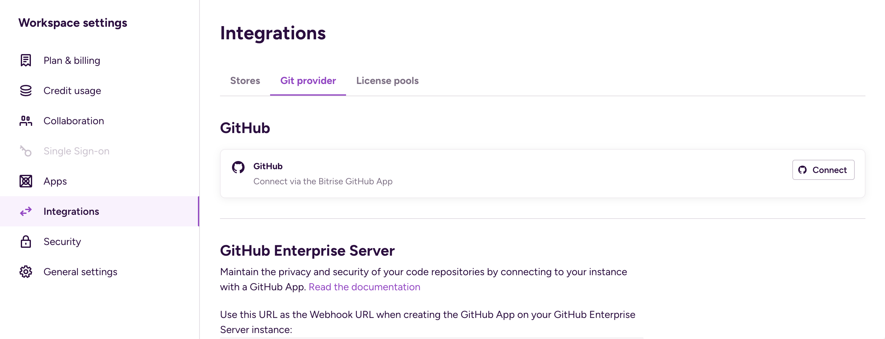If you haven't authorized the Bitrise GitHub App before, you will be prompted for authorization at this point:
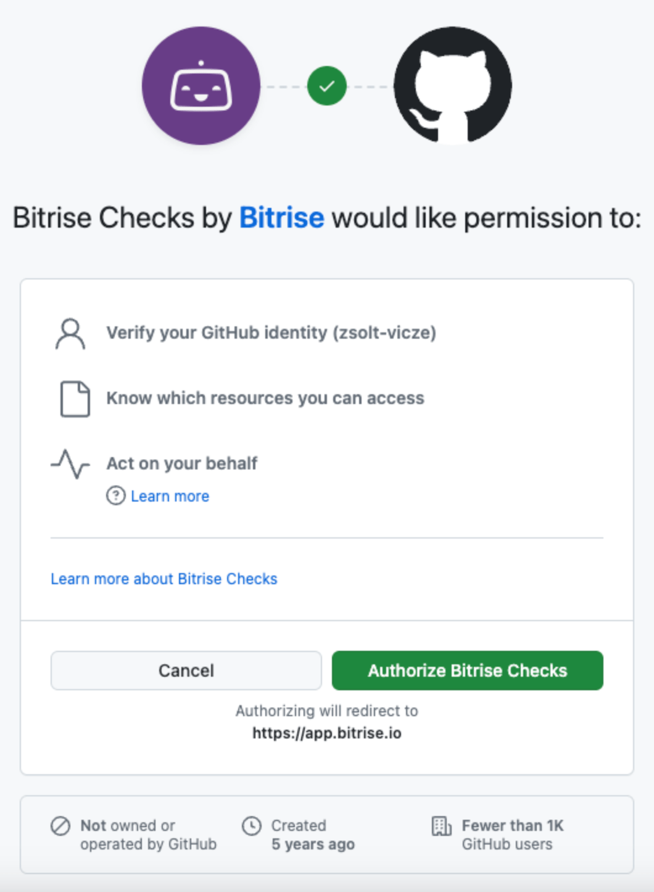You will be prompted to select the GitHub account or organization you want to connect. If you don't find the one you need in the list, you need to install the App to that account or organization first: click the link below the list of accounts.
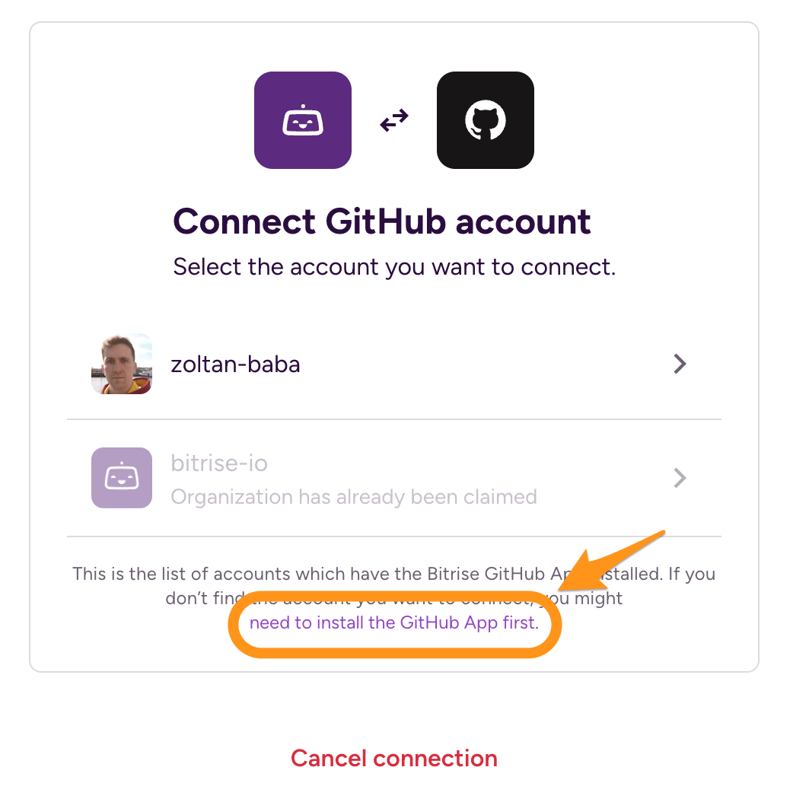Once you click the link, you will be prompted to select an account or organization. After selecting one, you will be transferred to the Install & Authorize page.
On the Install & Authorize page, select the access type:
All repositories: the Bitrise GitHub App will have access to all repositories belonging to the account or organization, including future ones.
Only select repositories: Select one or more repositories that Bitrise will be able to access. You can add more later but to do so, you will need to reconfigure your repository access on the app's page.
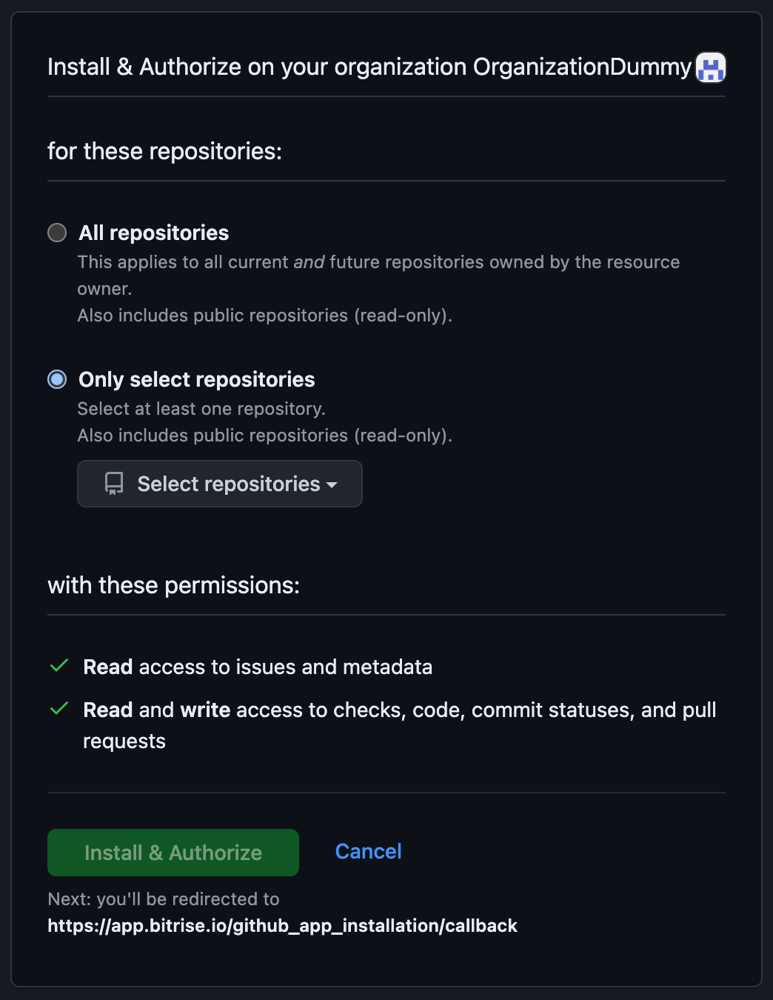When done, click . You will be redirected to the Workspace settings page.
Authorization
If you are not authorized on GitHub to install the app, you can still request the installation. Once a GitHub Admin approves the installation, you can come back and select the App installation from the list.
If you have existing apps with OAuth connection, we recommend switching them over to the GitHub App connection.
Connecting a GitHub App when adding a new app
During the process of adding a new app on Bitrise, you have to select how Bitrise can access your repository. This process allows connecting the app via the GitHub App.
Start the process of adding a new app.
At the Select a repository section, select from the dropdown menu.
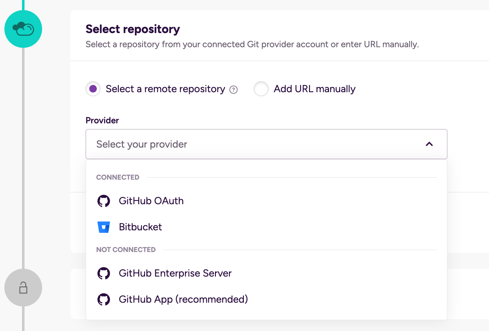Click .
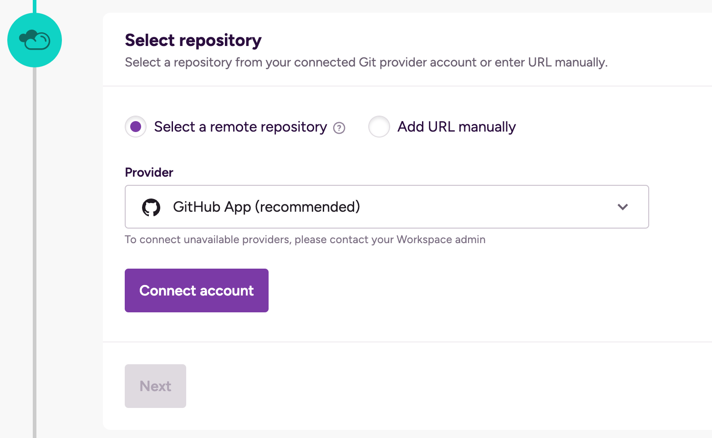You will be prompted to select the GitHub account or organization you want to connect. If you don't find the one you need in the list, you need to install the App to that account or organization first: click the link below the list of accounts.
Once you click the link, you will be prompted to select an account or organization. After selecting one, you will be transferred to the Install & Authorize page.
On the Install & Authorize page, select the access type:
All repositories: the Bitrise GitHub App will have access to all repositories belonging to the account or organization, including future ones.
Only select repositories: Select one or more repositories that Bitrise will be able to access. You can add more later but to do so, you will need to reconfigure your repository access on the app's page.
When done, click . You will be redirected to continue adding your new Bitrise app.
Connecting a Git provider with OAuth when adding an app
Connecting a Git provider account with an OAuth app allows Bitrise to:
List the available repositories when adding a new app.
Automatically register webhooks. Webhooks allow setting up build triggers and enable the use of Git Insights.
Log in to your bitrise.io account.
Click the symbol on the top menu bar and select .
Adding a new app from a CLI
You can also add a new app using CLI. For more information, check out Adding a new app from a CLI.
On the Create New App page, select the account and set the app’s privacy setting.
Use the radio buttons under the Select repository section to choose between selecting a remote repository or entering an URL manually.
If you opt to enter a git URL manually, add it in the Git repository (clone) URL field and click .
Choose the Git service provider of the app’s repository, if you chose to select a remote repository. If no account with that provider has been connected to your Bitrise account, the UI will display the option to connect.
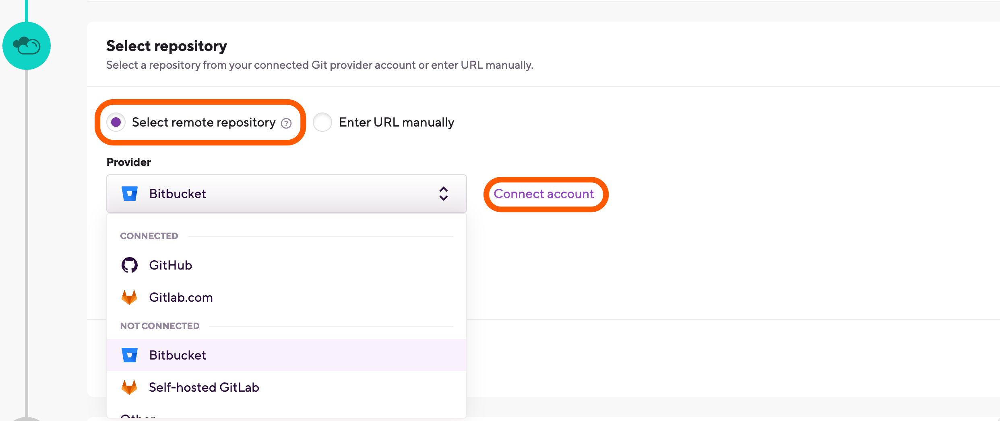 Click . This will take you to the login page of the Git provider.
Log in to the Git provider account.
You should be prompted to authorize bitrise.io - do it! If successful, you should be redirected to Bitrise, and a pop-up message should inform you that you successfully linked the account. Click .
Connecting a Git provider with OAuth from the Account settings page
Connecting a Git provider account with an OAuth application allows Bitrise to:
List the available repositories when adding a new app.
Automatically register webhooks. Webhooks allow setting up build triggers and enable the use of Git Insights.
In the upper right corner, open the account selector dropdown menu.
Select the option.
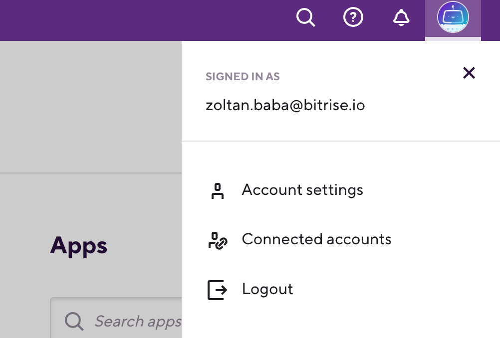On the left, under Connected Git providers, click the toggle next to the name of the Git provider you wish to connect.
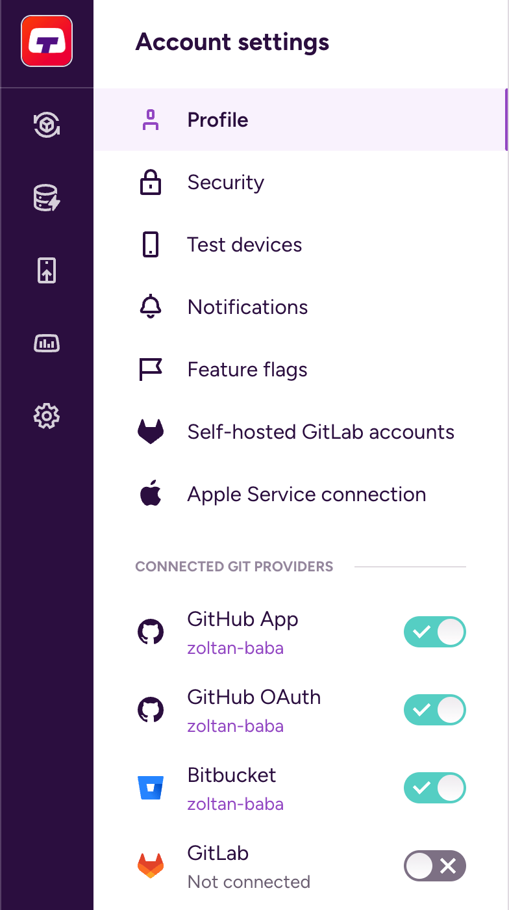Log in to the Git provider account.
You should be prompted to authorize bitrise.io - do it! If successful, you should be redirected to Bitrise, and a pop-up message should inform you that you successfully linked the account. Click .
Disconnecting a Git provider account
In the upper right corner, open the account selector dropdown menu.
Select the option.
On the left under Connected Git providers, click the toggle next to the name of the Git provider you wish to disconnect.
Switching from OAuth connection to the GitHub App
If your Bitrise app has an OAuth connection set up to your GitHub account, you can change it to the Bitrise GitHub App at any time without losing any functionality. We strongly recommend doing the switch: with the Bitrise GitHub App installed, you no longer need the service credential user, an SSH key, or a webhook to run Bitrise builds.
Can't switch back
Once you switch an app from the OAuth connection to the GitHub App, you won't be able to switch back!
To switch:
Install the Bitrise GitHub App as described in the relevant guide: Connecting a GitHub App from the Workspace settings page.
Open your app on Bitrise with a user that has the Admin role on the app.
On the main page of the app, click on the App Settings icon:
 .
.
On the left navigation menu, select Integrations and go to the Git provider tab.
In the Git integration status section, you can see a blue card with information about GitHub App support. To switch, click .
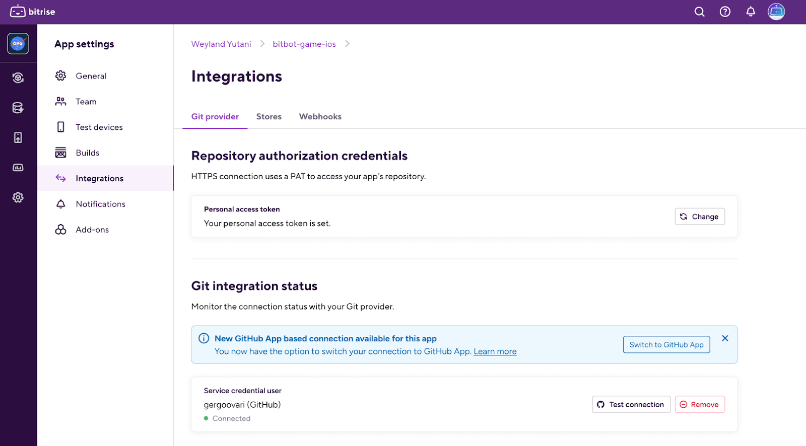
Connecting self-hosted GitLab instances
For Workspaces, Bitrise supports connecting to self-hosted GitLab instances. Once it’s done, you can add apps to Bitrise from privately hosted repositories.
For Workspaces, Bitrise supports connecting to self-hosted GitLab instances. Connecting is simple, and once it’s done, you can add apps to Bitrise from privately hosted repositories. All functions that you got used to with publicly hosted repositories will be available!
Setting up an app that is in a self-hosted GitLab repository is very simple: Bitrise needs to be authorized as an application for the entire GitLab instance and then the Application Id and the Secret value belonging to the Bitrise OAuth application must be added to the Workspace on bitrise.io.
Configuring the GitLab connection
To access privately hosted GitLab repositories on Bitrise, you need to create a new OAuth application on your GitLab account, and assign the appropriate credentials to access your server.
Publicly resolvable IP address
Your self-hosted GitLab instance must have a publicly resolvable IP address, otherwise Bitrise won’t be able to connect to it.
Log in to your GitLab instance with root privileges. If you connect to Bitrise without root privileges, your Workspace’s other team members will not have access to the repository on the GitLab instance.
Go to the admin area by clicking the little wrench icon on the top menu bar.
On the left menu bar, select , then click .
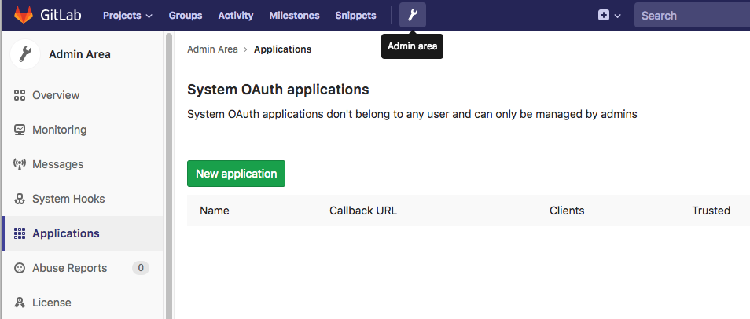In the Name field, enter a name that clearly identifies the application. For the sake of simplicity, we recommend
Bitrise.In the Callback URL field, enter
https://app.bitrise.io/users/auth/gitlab/callback.In the Scopes menu, check api.
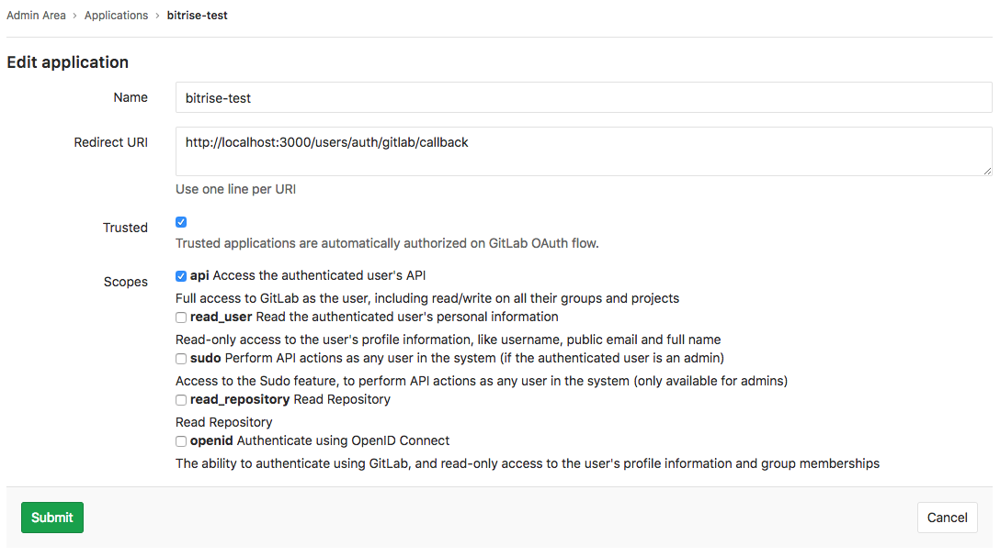Set the Confidential option to No.
If the newly created app is configured to be confidential, Bitrise won't be able to access it!
Click . On the next page, you should find the Application Id and a Secret. You’ll need both to connect to your GitLab instance on bitrise.io.
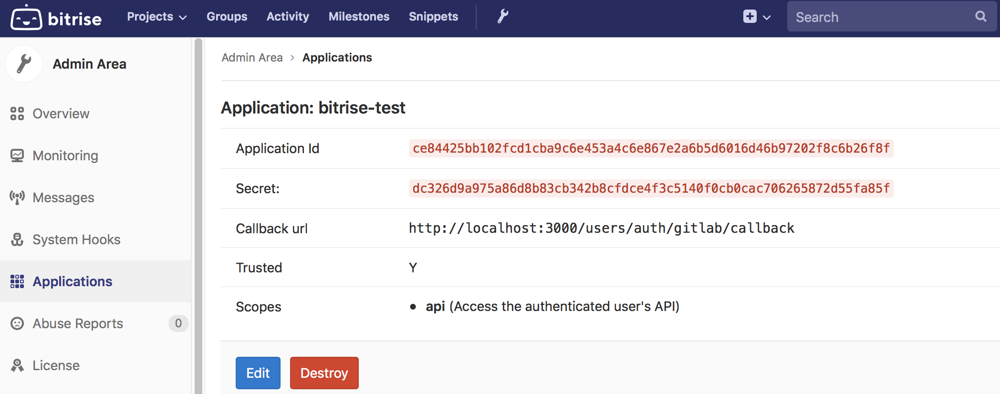Log in to Bitrise and open the account selector dropdown menu in the top right.
Find your Workspace and click the little gear icon next to its name to get to your Workspace's profile page.
Select the option on the left menu bar.
Add your self-hosted GitLab credentials:
App ID
Secret
Self-hosted URL
You are done! Now you are able to access your privately hosted repositories with Bitrise.
Adding a new app from a self-hosted GitLab repository
Log in to bitrise.io and click the symbol on the top menu bar and select from the options.
Select the Workspace that will be the owner of the app.
When prompted to select your Git provider, select GitLab. Select the Self-hosted option.
If you haven’t provided your self-hosted GitLab credentials to the Workspace before, you can do it at this stage.
Click .
Once connected, proceed as usual: Adding a new app
Apple services connection
Connect your Bitrise builds to Apple services using either API key authentication or Apple ID authentication in order to manage iOS code signing and deployment.
Your Workflow may contain Steps that need information from the Apple service you use, for example, the App Store Connect or the Apple Developer Portal. These two services are supported by the following Steps:
To connect these Steps with the Apple service you wish to use while your build runs on Bitrise, you need to provide authentication data to Bitrise and select the established authentication method for your app.
You can authenticate with Apple’s official API key or with Apple ID and password.
Apple two-factor authentication requirements
Apple’s two-factor authentication (2FA) provides an extra layer of security on your Apple account.
If you have been authenticating with the API key so far, you are not affected by the two-factor authentication requirement.
If, however, you have been authenticating with an Apple ID and a password, and the new 2FA requirement affects you, then you’ll have to reconnect your Apple Developer Account on the Apple Service connection page of your Bitrise profile. You’ll also have to provide the two-factor authentication/two-step verification code and an app-specific password as well. Please find the official Apple documentation on how to generate an app-specific password.
Steps that require connecting to your Apple Developer account
The following Steps require connection to Apple services (such as App Store Connect or the Apple Developer Portal). If you’re using any of these Steps, make sure you establish connection with the right method.
Steps | Connection type |
|---|---|
Manage iOS Code Signing | API key authentication, Apple ID authentication, API key authentication through Step inputs |
Xcode Archive & Export for iOS | API key authentication, Apple ID authentication, API key authentication through Step inputs |
Export iOS and tvOS Xcode archive | API key authentication, Apple ID authentication, API key authentication through Step inputs |
Xcode Build for testing for iOS | API key authentication, Apple ID authentication, API key authentication through Step inputs |
fastlane | API key authentication, Apple ID authentication, API key or Apple ID authentication through Step inputs |
Deploy to App Store Connect with Deliver (formerly iTunes Connect) | API key authentication, Apple ID authentication, API key or Apple ID authentication through Step inputs |
Deploy to App Store Connect - Application Loader (formerly iTunes Connect) | API key authentication, Apple ID authentication, API key or Apple ID authentication through Step |
Depending on which authentication you can use in your project, you have the following options:
API key authentication: If you can, we recommend you use this authentication method. It does not require two-factor authentication. All it takes is connecting to the Apple services by providing Name, Issuer ID, Key ID and upload a Private Key (.p8), then selecting an account under the Team tab in your app’s settings. The data you give automatically populates the respective fields of the Steps that work with API key authentication.
Apple ID authentication: If you cannot use the API key authentication, you can authenticate with your Apple ID and password. Provide your Apple ID, password, 2FA code and app-specific password then select an account under the Team tab in your app’s settings. The data you give automatically populates the respective fields of the Steps that work with the Apple ID authentication.
API key or Apple Id authentication through Step inputs: If you wish to deploy to multiple teams or deploy to a team where authentication is different from the connected one you’ve been using, then you can add your preferred authentication into the Step’s inputs. Some Steps, such as Xcode Archive & Export for iOS, only have an API key authentication override option, while some Steps, like fastlane, have options for both API key and Apple ID Step level authentication override.
Apple service permissions
In order to successfully connect Bitrise to Apple services, you need to set up the right roles and accesses in your Apple account for your Apple ID and your API keys.
In order to successfully connect Bitrise to Apple services, you need to set up the right roles and accesses in your Apple account for your Apple ID and your API keys. You must set up the appropriate access rights to be able to:
Use automatic code signing.
Deploy your app to the App Store.
The exact roles and accesses you need depend on a number of factors: your authentication method, whether you use Xcode managed signing, and the details of your app deployment process, among other things.
In this guide, we'll list the roles based on the two main authentication methods: API key authentication and Apple ID authentication.
Required access with API key authentication
To use Bitrise Steps with Apple API key authentication, you need to create an App Store Connect API key with the appropriate access level. The appropriate level depends on what you need to do.
If, for example, you use Xcode managed signing in your project and wish to export the generated IPA file with a Distribution certificate and an App Store provisioning profile, the App Store Connect API key must have Admin access.
Table 9, “Access required for automatic code signing with API key authentication” contains the required access for automatic code signing. In the table, we grouped code signing actions based on the type of the IPA file we're attempting to export. There are two main types:
Development IPA: this is an IPA exported with the development method.
Distribution IPA: this is an IPA exported with the app-store, ad-hoc, or enterprise distribution method.
Code signing action | Required access with Xcode managed signing turned ON | Required access with Xcode managed signing turned OFF |
|---|---|---|
Exporting Development IPA. This can include:
| Developer | Developer |
Exporting App Store IPA. This can include:
| Admin | Developer |
Table 10, “Access required for App Store deployment with API key authentication” contains the required roles for deploying your app to the App Store.
For App Store deployment, the required access depends on how you wish to upload the generated IPA file. You can either:
Upload only the IPA without any additional steps.
Upload the IPA with metadata and screenshots, and submit the app for review.
App Store deployment actions | Required access for API key |
|---|---|
Uploading a new IPA without any metadata | Developer |
Uploading a new IPA and:
| App Manager |
Required access with Apple ID authentication
To use Bitrise Steps with Apple ID authentication, you need to make sure that your Apple ID has the appropriate role in your Apple Developer team.
Table 11, “Roles required for automatic code signing with Apple ID authentication” contains the necessary roles for using automatic code signing on Bitrise. In the table, we grouped code signing actions based on the type of the IPA file we're attempting to export. There are two main types:
Development IPA: this is an IPA exported with the development method.
Distribution IPA: this is an IPA exported with the app-store, ad-hoc, or enterprise distribution method.
Read more about the different distribution methods: Creating a signed IPA for Xcode projects.
Xcode managed signing
If you use Apple ID authentication on Bitrise, Xcode managed signing is automatically turned off in your project. Instead, Bitrise uses its own automatic code signing logic.
Code signing action | Required role |
|---|---|
Exporting development IPA. This can include:
| App Manager |
Exporting an App Store IPA. This can include:
| App Manager |
Table 12, “Roles required for App Store deployment with API key authentication” contains the required roles for deploying your app to the App Store.
For App Store deployment, the required access depends on how you wish to upload the generated IPA file. You can either:
Upload only the IPA without any additional steps.
Upload the IPA with metadata and screenshots, and submit the app for review.
App Store deployment actions | Required role for Apple ID |
|---|---|
Uploading a new IPA without any metadata | Developer |
Uploading a new IPA and:
| App Manager |
Connecting to an Apple service with API key
Connect to an Apple service with API key to manage iOS code signing and deployment. The API key authentication is the recommended way when connecting Bitrise to Apple Services.
Connecting to an Apple service (such as the App Store Connect or the Apple Developer Portal) with the API key requires generating an API key, adding the authentication data on Bitrise, and assigning the key to the app.
The API key authentication is the recommended way when connecting Bitrise to Apple Services. You can have 50 API keys added to the Apple Services connection page but your app can use only one.
No Step input modifications needed
With this method, all Step inputs related to authenticating with an Apple API key are automatically populated once the connection is set up. You don't have to manually modify those Step input fields at all.
Adding API key authentication data on Bitrise
There are two ways to add API key authentication data to Bitrise:
On your Profile settings page.
On the Integrations page of the App settings page.
Profile page
App settings page
On App Store Connect, generate a new API key with Admin access under Users and Access.
You will need the name of the key, the key ID and the issuer ID on Bitrise.
Admin access
You must use the Admin role for the new App Store Connect API key! The Step and your build will fail if you set a different role.
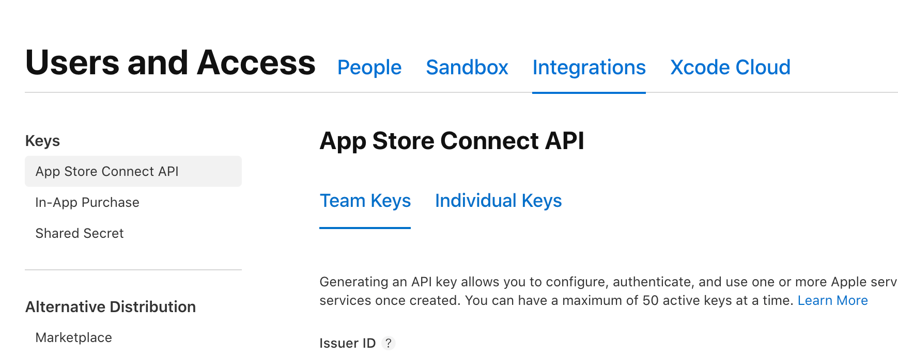In the upper right corner, open the account selector dropdown menu.
Select the option.
On the left, select Apple Service connection.
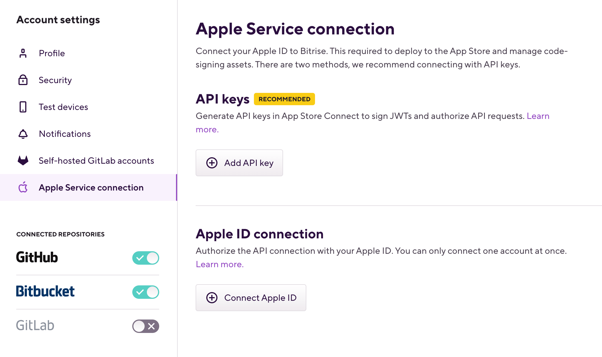Click .
Fill out all required fields:
Name: Your generated API key's name.
Issuer ID: To get your issuer ID, log in to App Store Connect and select Users and Access, then select the API Keys tab.The issuer ID appears near the top of the page. To copy the issuer ID, click Copy next to the ID.
Key ID: When you successfully generate a new API key, App Store Connect shows you the key ID.
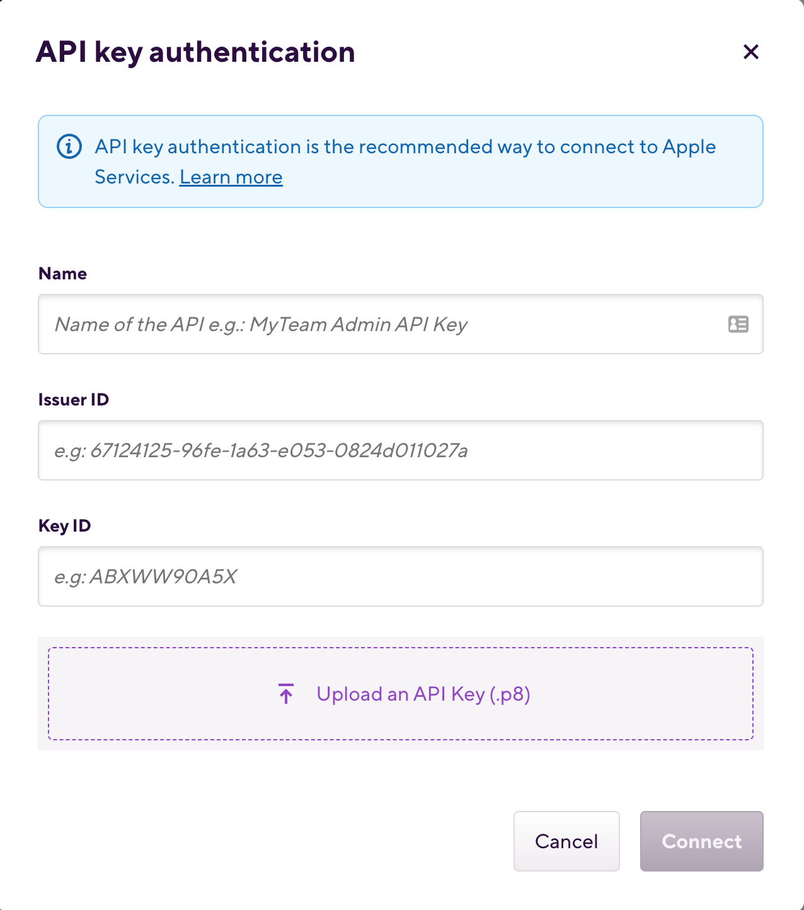Upload the
.p8file: either drag and drop it to the upload field, or click it and select the file from your computer.Click .
On App Store Connect, generate a new API key with Admin access under Users and Access.
You will need the name of the key, the key ID and the issuer ID on Bitrise.
Admin access
You must use the Admin role for the new App Store Connect API key! The Step and your build will fail if you set a different role.
Open your app on Bitrise with a user that has the Admin role on the app.
On the main page of the app, click on the App Settings icon:
.On the left, select Integrations.
Select the Stores tab.
Find the App Store Connect section.
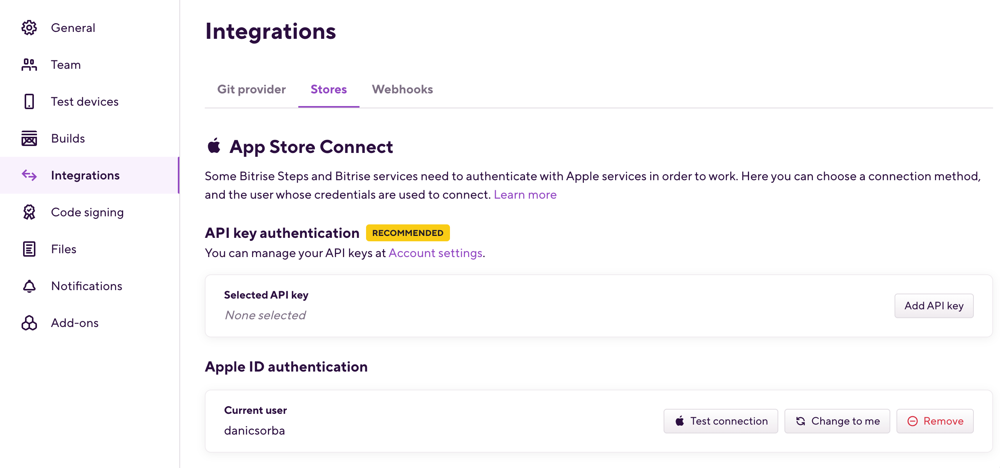Find the API key authentication (recommended) option.
Click .
Fill out all required fields:
Name: Your generated API key's name.
Issuer ID: To get your issuer ID, log in to App Store Connect and select Users and Access, then select the API Keys tab.The issuer ID appears near the top of the page. To copy the issuer ID, click Copy next to the ID.
Key ID: When you successfully generate a new API key, App Store Connect shows you the key ID.
Upload the
.p8file: either drag and drop it to the upload field, or click it and select the file from your computer.Click .
Once done, you can now assign this API key to any app that you have access to on this account. From then, the app will use that API connection to access App Store Connect.
Assigning API key authentication to your app
To use API key authentication for Apple services for your app, you must:
Add an API key on Bitrise: You can add multiple API keys to the same account.
Assign an API key to your app: Each app can only have one API key assigned to it.
To assign the API key to the app:
Open your app on Bitrise with a user that has the Admin role on the app.
On the main page of the app, click on the App Settings icon:
.On the left, select Integrations.
Select the Stores tab.
Find the App Store Connect section.
Find the API key authentication (recommended) option.
Click if you have no API key set up or if an existing one has already been assigned.
Multiple apps with the same API key
With the button, you can add a new App Store Connect API key to your Bitrise account. Other apps you have access to can use this API key, too.
If you are changing an existing API key, select the API key you need from the dropdown menu in the dialog box.
You will only see the API key or keys that are registered to your Bitrise account.
The Step is now able to connect to the App Store Connect or the Apple Developer Portal during your build.
Connecting to an Apple service with Apple ID
Connect to an Apple service with Apple ID to manage iOS code signing and deployment.
Connecting to an Apple service (such as the App Store Connect or the Apple Developer Portal) with the Apple ID requires that you first add your Apple ID and password on the Apple Service connection page, then select an app to use Apple ID authentication while the build is running.
If you cannot use the API key authentication, we recommend you try this option. Please note that you can only connect one Apple ID to Bitrise.
Apple accounts with two-factor authentication enabled
If two-factor authentication is enabled on your Apple account, you will have to provide the App-specific password during this process. Learn how to generate an app-specific password on the Security section of your Apple ID account page.
Adding Apple ID authentication data on Bitrise
In the upper right corner, open the account selector dropdown menu.
Select the option.
On the left menu bar, select .
Click the button.
Provide your Apple ID and Password in the popup window. Click .
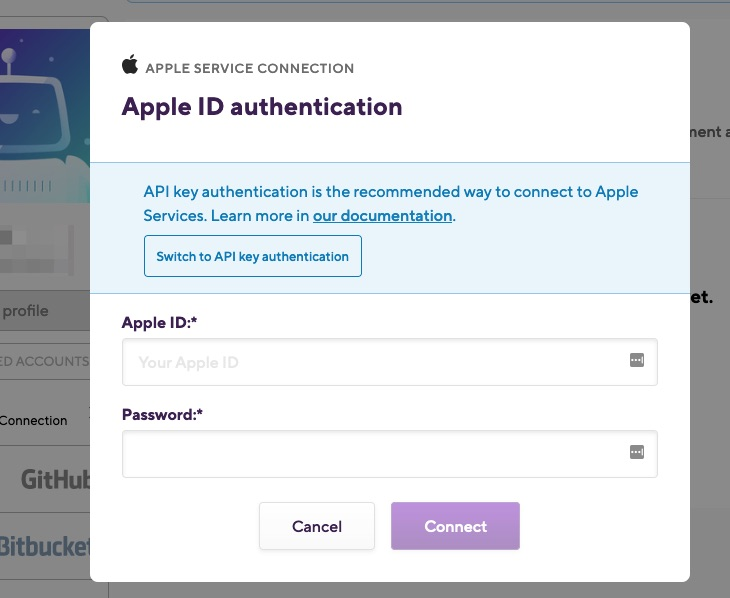Enter your verification code in the Two factor authentication window.
Add the app-specific password. Click to continue.
You will be prompted to provide your verification code.
Your authentication expires in 30 days and you will have to authenticate again. When that happens, go to the Apple Service connection page, it will automatically ask for the two-factor authentication (2FA) code to authenticate again. There will be a list of the Apple Developer accounts that you have defined. To the far right of the Apple ID connection, there are 3 dots. Click the dots and select ().
Continue with Assigning an Apple Developer Account for your app.
Assigning Apple ID authentication to your app
Connecting to an Apple service (such as the App Store Connect or the Apple Developer Portal) with Apple ID authentication requires that you first add your Apple service authentication data on bitrise.io and then assign your Apple credentials to the app. With this method, you don't have to worry about authentication when using Steps that connect to Apple services: all Step inputs related to Apple authentication are automatically filled in.
Can't assign other users' Apple credentials
You can only set your own user account's Apple ID authentication data to an app. If you have an app that needs someone else's Apple credentials, that user must log in and make the change themselves.
To assign Apple ID authentication data to your app:
Open your app on Bitrise with a user that has the Admin role on the app.
On the main page of the app, click on the App Settings icon:
.On the left, select Integrations.
Scroll down to the Connection to Apple services section.
Find the Apple ID authentication option.
Click .
If you can't find this option, you probably haven't set up your Apple credentials on bitrise.io. Note that changing the selected user removes the previous user. If you need to use the previous user's Apple credentials again, that user must log in and change it themselves.
Test connection
By clicking , you can check whether Bitrise can access Apple services using the provided credentials.
Steps are now able to connect to an Apple service during your build.
Connecting to an Apple Service with Step inputs
If you want to deploy to a team where authentication is different from the connected one you’ve been using, then you can add your preferred authentication into the Step’s inputs.
If you wish to deploy to multiple teams or deploy to a team where authentication is different from the connected one you’ve been using, then you can add your preferred authentication into the Step’s inputs. This will override the connection previously set in Bitrise Developer Connection.
This way connection is restricted to the given Step where you set up authentication.
2FA and Apple ID authentication
If 2FA is required for your Apple ID, then you must use the Apple ID authentication with the Deploy to App Store Connect with Deliver (formerly iTunes Connect) and the fastlane Steps instead of authenticating through Step inputs.
Authenticating in a Step with API key
API-key & Apple ID
API-key only Steps
Add one of the following Steps to your Workflow:
fastlane
Deploy to App Store Connect with Deliver (formerly iTunes Connect)
Deploy to App Store Connect - Application Loader (formerly iTunes Connect)
Either API key or Apple ID authentication in Step inputs
You can only add one type of authentication into the Step, either the API key one or the Apple ID one. In either case, make sure the Bitrise Apple Developer Connection input is set to
off, otherwise the Step will go with the configured authentication method found in Apple Service connection (unless you decide to remove the connection on the Teams tab).Upload the API key to the GENERIC FILE STORAGE section of the Code Signing & Files tab.
Set the Bitrise Apple Developer Connection input to
off.Set the Issuer ID as a secret Environment Variable in the respective field of the Step.
Configure the API Key path and API Issuer inputs.
Save your changes and run a new build.
Add one of the following Steps to your Workflow:
Manage iOS Code Signing
Xcode Archive & Export for iOS
Export iOS and tvOS Xcode archive
Xcode Build for testing for iOS
Upload your App Store Connect API private key file (.p8 file) to the Generic File Storage in the Code Signing & Files tab.
Set the Automatic code signing method to
api-key.Set the following Step inputs under the App Store Connect connection override input group:
App Store Connect API private key: Local path or remote URL to the private key (.p8 file) for App Store Connect API. Set this input to the automatically generated Env Var connected to the App Store Connect API private key file (.p8 file) you uploaded to the Generic File Storage in step 2.
App Store Connect API key ID: Private key ID used for App Store Connect authentication.
App Store Connect API issuer ID: Private key issuer ID used for App Store Connect authentication.
Authenticating in a Step with Apple ID and password
Either API key or Apple ID authentication in Step inputs
You can only add one type of authentication into the Step, either the API key one or the Apple ID one. In either case, make sure the Bitrise Apple Developer Connection input is set to off, otherwise the Step will go with the configured authentication method found in Apple Service connection (unless you decide to remove the connection on the Teams tab).
Add the Step to your Workflow.
Set the Apple ID and Password.
Set the Bitrise Apple Developer Connection input to
off.Save your changes and run a new build.
Steps requiring Apple authentication
Check out all the Bitrise Steps that require a connection to an Apple service using either an API key or an Apple ID.
In this guide we list all the Steps that require authentication and the authentication methods that you can choose from depending on your app’s requirement.
Manage iOS Code Signing Step
This Step takes care of setting up the required code signing assets before your project is built on Bitrise. The Step uses your API key or your Apple ID and password authentication to connect to an Apple service. Once connection is configured, the Step will:
Generate, update and download the provisioning profiles needed for your iOS project.
Verify and register the project's Bundle IDs on the Apple Developer Site.
Register the iOS devices connected to your Bitrise account with the App Store Connect.
Connecting to an Apple service with API key
Xcode Archive & Export for iOS Step
The Step archives your Xcode project by running the xcodebuild archive command and then exports the archive into an IPA file with the xcodebuild -exportArchive command. This IPA file can be shared, installed on test devices, or uploaded to the App Store Connect.
The Step can also perform iOS code signing if the Automatic code signing method input specifies a method. By default, it's turned off. To perform iOS code signing, it can use API key or Apple ID authentication.
Connecting to an Apple service with API key
Export iOS and tvOS Xcode archive Step
Exports an IPA from an existing iOS and tvOS .xcarchive file. You can add multiple Export iOS and tvOS Xcode archive Steps to your Workflows to create multiple different signed IPA files.
The Step can also perform iOS code signing if the Automatic code signing method input specifies a method. By default, it's turned off. To perform iOS code signing, it can use API key or Apple ID authentication.
Connecting to an Apple service with API key
Xcode Build for testing for iOS Step
The Step runs Xcode's xcodebuild command with the build-for-testing option. This builds your app and associated tests so that you can, for example, upload it to a third-party testing service to run your tests on a real device. The Step also creates an .xctestrun file. To be able to run your tests on a real device it needs code signing.
The Automatic code signing method Step input allows you to log you into your Apple Developer account based on the Apple service connection you provide on Bitrise and download any provisioning profiles needed for your project based on the Distribution method.
Connecting to an Apple service with API key
Deploy to App Store Connect with Deliver Step
With this Step, you can upload screenshots, metadata and binaries to https://appstoreconnect.apple.com/ and submit your app for App Store review using the fastlane deliver action. The Deploy to App Store Connect with Deliver (formerly iTunes Connect) Step can connect to your Apple Developer Account either with Apple ID or with the App Store Connect API, or through Step inputs. Please note that in the case of 2FA enabled Apple ID, the Deploy to App Store Connect with Deliver (formerly iTunes Connect) Step can only work with Apple ID authentication which you can set on the Apple Service page of your profile. The default method is the API key authentication. Choose the connection method that works with your project:
Connecting to an Apple service with API key
Deploy to App Store Connect - Application Loader (formerly iTunes Connect) Step
With this Step, you can upload binaries (.ipa or .pkg files) to https://appstoreconnect.apple.com/. The Deploy to App Store Connect - Application Loader (formerly iTunes Connect) Step can connect to your Apple Developer Account either with the App Store Connect API, the Apple ID and password, or through Step inputs. Choose the connection method that works with your project:
Connecting to an Apple service with API key
fastlane Step
With this Step you can run your fastlane lanes on Bitrise just like you would locally. Check out our guide about Integrating fastlane to Bitrise for more information.
Please note that in the case of 2FA enabled Apple ID, the Fastlane Step can only work with Apple ID authentication which you can set on the Apple Service page of your profile.
Two-factor authentication fails with the Fastlane Step
In some cases, the Fastlane Step doesn't get the value of the FASTLANE_SESSION variable correctly when attempting to connect to the Apple Developer portal, causing two-factor authentication to fail. Check out the potential workaround for this issue.
Connecting to an Apple service with API key